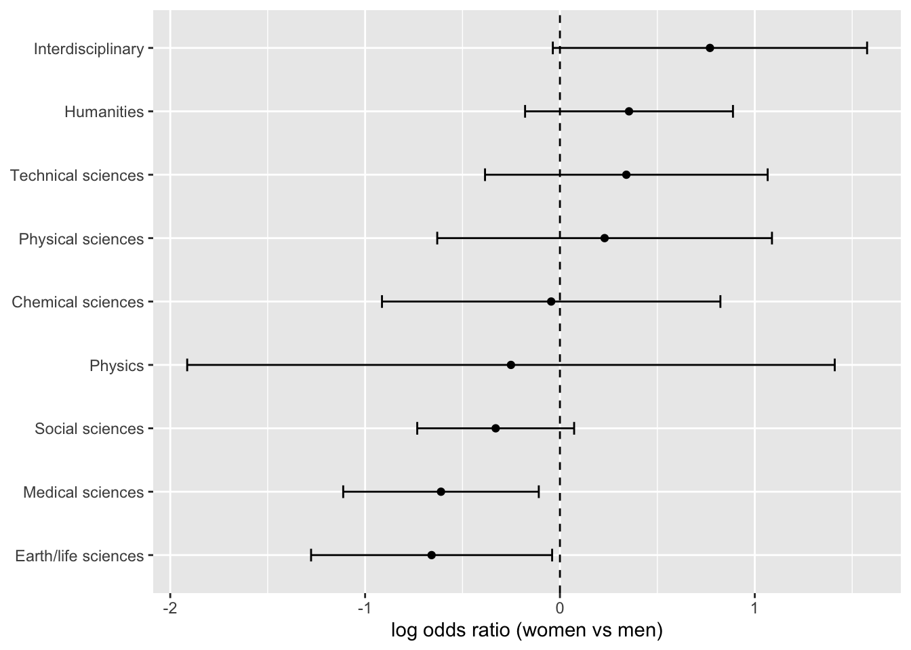

library(dslabs)
library(dplyr)
library(ggplot2)BST 260 Problem set 8: Topics in generalized linear models
Q1
tab <- matrix(c(8, 9, 350, 150), nrow = 2, byrow = TRUE,
dimnames = list(c("Olympics", "Regular"), c("Won", "Lost")))
tab Won Lost
Olympics 8 9
Regular 350 150chisq.test(tab)
Pearson's Chi-squared test with Yates' continuity correction
data: tab
X-squared = 3.0573, df = 1, p-value = 0.08038chisq.test(tab)$expected Won Lost
Olympics 11.77176 5.22824
Regular 346.22824 153.77176chisq.test(tab, correct = FALSE)
Pearson's Chi-squared test
data: tab
X-squared = 4.0631, df = 1, p-value = 0.04383Using chi-square test with Yates’ correction to compare to losing record between Olympics and regular career matches, we get X square is 3.06, df=1, p=0.080. At the o.o5 level, we cannot reject the null hypothesis that her losing rate is the same in both settings, so her Olympic record is consistent with chance. However, without the correction, the p-value is 0.044, so the conclusion is sensitive to the choice of method. the evidence(only 17 matches) is not strong enough to conclude that she performs poorly under pressure, but failing to teject the null does not prove that chance is the reason either.
Q2: C
Q3
a <- 9; b <- 8; c <- 150; d <- 350
or <- (a/b) / (c/d)
log_or <- log(or)
se <- sqrt(1/a+1/b+1/c+1/d)
ci <- exp(log_or + c(-1, 1) * 1.96 * se)
or; se; ci[1] 2.625[1] 0.4956157[1] 0.9936941 6.9343524From the result, the odds of losing in the Olympics are estimated to be 2.63 times the odds of losing in regular matches. To answer critics, the point estimate shows that she is easier to lose in Olympics. but the CI has 1, showing data also has variation. It is not fair to make the criticism that she perform worse under pressure with limited sample size(so few Olympic matches). The data does not show strong evidence she performs worse under pressure.
Q4
dat <- data.frame(olympics = c(1, 0), lost = c(9, 150), won = c(8, 350))
fit <- glm(cbind(lost, won) ~ olympics, family = binomial, data = dat)
summary(fit)
Call:
glm(formula = cbind(lost, won) ~ olympics, family = binomial,
data = dat)
Coefficients:
Estimate Std. Error z value Pr(>|z|)
(Intercept) -0.84730 0.09759 -8.682 <2e-16 ***
olympics 0.96508 0.49562 1.947 0.0515 .
---
Signif. codes: 0 '***' 0.001 '**' 0.01 '*' 0.05 '.' 0.1 ' ' 1
(Dispersion parameter for binomial family taken to be 1)
Null deviance: 3.7307e+00 on 1 degrees of freedom
Residual deviance: -5.3291e-14 on 0 degrees of freedom
AIC: 13.804
Number of Fisher Scoring iterations: 2exp(coef(fit)) (Intercept) olympics
0.4285714 2.6250000 exp(confint.default(fit)) 2.5 % 97.5 %
(Intercept) 0.3539602 0.5189099
olympics 0.9937119 6.9342283exp(confint(fit)) Waiting for profiling to be done... 2.5 % 97.5 %
(Intercept) 0.3530414 0.5177225
olympics 0.9854624 7.1171756Based on the result of glm, the log(OR) is 0.965, with a SE=0.496. The Wald interval is between (0.99,6.93). The default profile likelihood is (0.99, 7.12). Both have similar result, which does not have strong evidence of losing under pressure.
Q5
data(research_funding_rates)
names(research_funding_rates) [1] "discipline" "applications_total" "applications_men"
[4] "applications_women" "awards_total" "awards_men"
[7] "awards_women" "success_rates_total" "success_rates_men"
[10] "success_rates_women"rf <- research_funding_rates |>
mutate(no_men = applications_men - awards_men,
no_women = applications_women - awards_women,
log_or = log((awards_women / no_women) / (awards_men / no_men)),
se = sqrt(1/awards_women + 1/no_women + 1/awards_men + 1/no_men),
lower = log_or - 1.96 * se,
upper = log_or + 1.96 * se) |>
select(discipline, log_or, se, lower, upper)
rf discipline log_or se lower upper
1 Chemical sciences -0.04487933 0.4430923 -0.9133401 0.82358149
2 Physical sciences 0.22927854 0.4382697 -0.6297300 1.08828707
3 Physics -0.25131443 0.8478330 -1.9130672 1.41043833
4 Humanities 0.35459227 0.2721982 -0.1789162 0.88810074
5 Technical sciences 0.34083588 0.3700728 -0.3845068 1.06617858
6 Interdisciplinary 0.77003232 0.4114644 -0.0364380 1.57650265
7 Earth/life sciences -0.65866100 0.3156029 -1.2772427 -0.04007935
8 Social sciences -0.32977985 0.2054298 -0.7324223 0.07286264
9 Medical sciences -0.61045845 0.2560782 -1.1123716 -0.10854528library(ggplot2)
rf |>
mutate(discipline = reorder(discipline, log_or)) |>
ggplot(aes(x = discipline, y = log_or, ymin = lower, ymax = upper)) +
geom_point() +
geom_errorbar(width = 0.2) +
geom_hline(yintercept = 0, linetype = "dashed") +
coord_flip() +
labs(x = NULL, y = "log odds ratio (women vs men)")
Q6
Earth/life sciences and medical sciences are the disciplines for which one gender appears to be favored over the other. In both, men are favored.